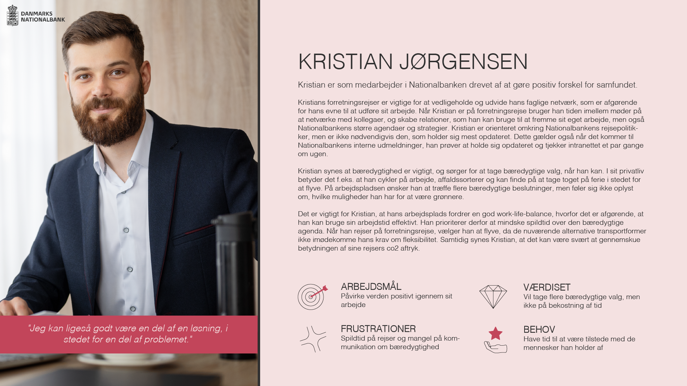
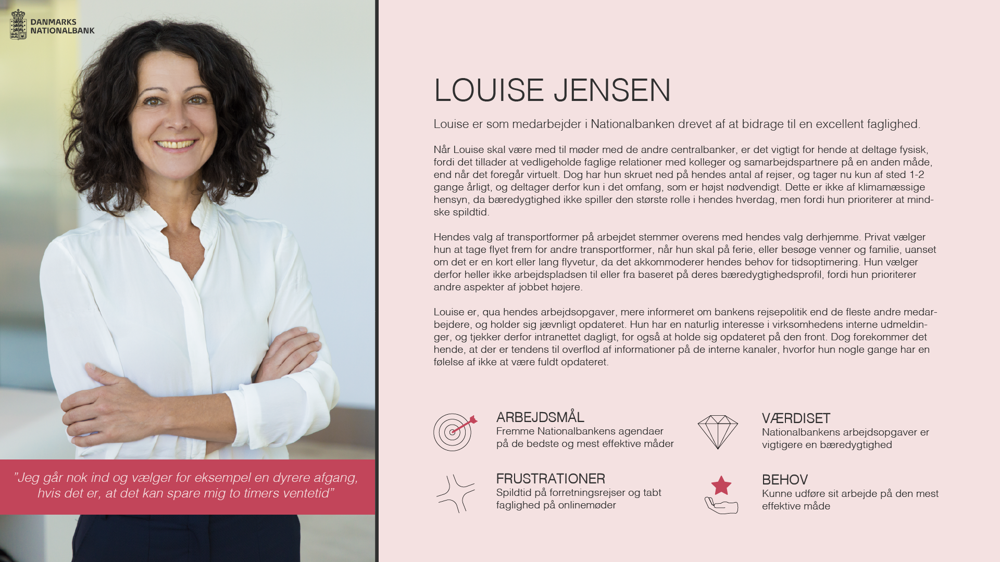
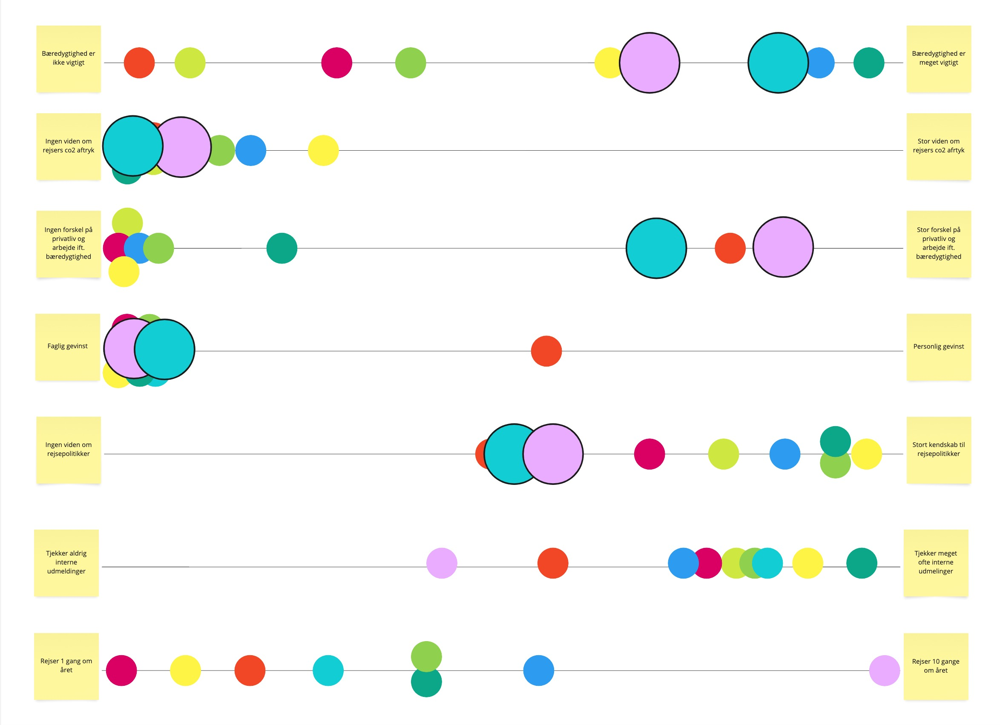

Personaer
Personaerne er defineret ud fra kvaliativ data, som mine medstuderende og jeg indsamlede i 11 interviews med forskellige medarbejdere i DN.


Vores indledende undersøgelser viste, at medarbejderes rejseadfærd i forbindelse med forretningsrejser ikke var noget, som havde stor sammenhæng med deres personlinge attitude eller klimabevidsthed. Vi konkluderede derfor at reele og varige adfærdsændringer kun ville komme ifb. policy-ændringer fra ledelsen i DN.
I det scenarie ville det være afgørende, at ledelsen forstod hvem deres medarbejdere var, og hvordan de ville skulle kommunikere ændringerne til dem.
Cluster analyse
Ved at placere hver interviewperson på en skala mellem en række variabler, blev det muligt at identificere to clusters - dvs. to personaer, hvis adfærdsmønstre fulgtes ad på tværs af variablerne.


Hver farvet cirkel repræsenterer en informant.